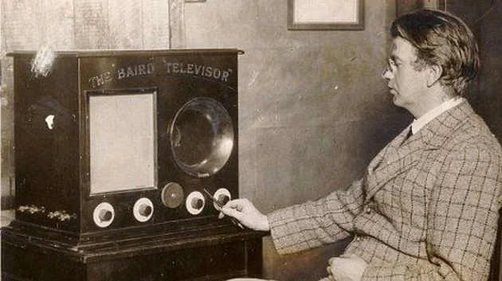
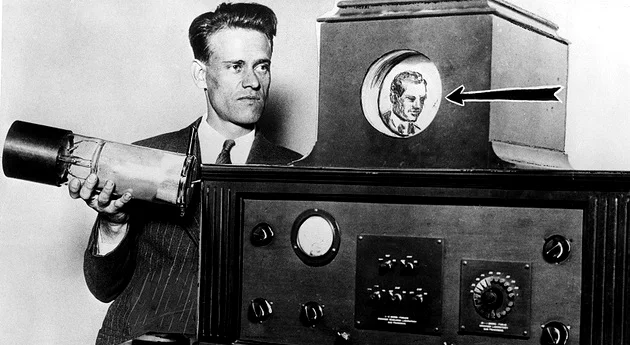
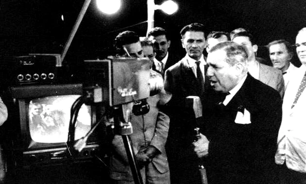

História da Televisão
A criação do aparelho de televisão é fruto da combinação de vários inventos que possibilitaram a recepção de um sinal elétrico e sua transformação em imagens. Oficialmente, a primeira demonstração do aparelho ocorreu em 1926, quando o escocês John Logie Baird apresentou a televisão mecânica aos cientistas da Academia Britânica. Por outro lado, nos Estados Unidos, Philo Taylor Farnsworth, em 1927, fez uma demonstração de um artefato que transmitia imagens através de raios catódicos.
Evolução da História da Televisão
Assim como a fotografia e o cinema, a televisão é resultado de vários inventos que, unidos entre si, resultaram no televisor.O surgimento do rádio, do telefone e da eletricidade, despertou a vontade de cientistas e curiosos de fazer uma máquina capaz de transmitir imagens através de ondas sonoras. Vejamos alguns desses pioneiros.
John Logie Baird (1888-1946)
O engenheiro escocês John Logie Baird (1888-1946) foi um dos primeiros a se perguntar como seria possível transmitir imagens através das ondas do rádio. Após intenso trabalho, Baird realizou uma demonstração do aparelho, em 1926, para cientistas da Academia Britânica, em Londres. Seu modelo de televisão mecânica foi adotado pela BBC e tornou-se um dos primeiros a ser utilizado. Igualmente, conseguiu realizar uma transmissão a cores. Em 1937, porém, a BBC resolve trocar o sistema e passa a usar a tecnologia desenvolvida pela empresa Marconi-EMI. Essa decisão deixaria Baird muito abalado, o que explica seu esquecimento na história da televisão. 
Philo Taylor Farnsworth (1906-1971)
O americano Philo Taylor Farnsworth aproveitou as pesquisas e a criação do tubo de raios catódicos para obter a transmissão de imagens por via eletrônica. Sua invenção seria testada com êxito em 1927 e Farnsworth mostraria seu funcionamento ao longo da década de 30 em feiras científicas. Após desentendimentos com grandes empresas do setor como a RCA e a Philco, fundaria sua própria companhia de televisores e rádios de 1938 a 1951. 
Ernst Alexanderson (1878-1975)
Seguindo os passos da televisão mecânica, o engenheiro sueco Ernst Alexanderson, no entanto, se afastaria do modelo, ao julgá-lo pouco prático. Assim, continua sua pesquisa e consegue provar a transmissão de imagens sem a necessidade de cabos. Alexanderson fez a primeira demonstração pública de sua televisão no Proctors Theater, em Nova York, no dia 13 de janeiro de 1928. Esta TV tinha uma resolução de 24 linhas. Só para comparar, atualmente uma TV UHD tem 2160 linhas de resolução. Outros cientistas que também contribuíram para o invento da televisão foram:
- o engenheiro russo Vladimir Zworykin (1888-1982);
- o engenheiro alemão Klaus Landsberg (1916-1956);
- o inventor polonês Paul Julius Gottlieb Nipkow (1860-1940);
- o engenheiro francês Maurice Leblanc (1857-1923).
Popularização da Televisão
Durante alguns anos, a televisão foi considerada a companheira de poucos, visto que somente famílias ricas podiam comprar o caríssimo objeto. Um exemplo é o Reino Unido, onde apenas 3.000 pessoas possuíam televisões na década de 30. Em 1934, a empresa alemã Telefuken começa a fabricar os primeiros aparelhos com tubo de raios catódicos. Dois anos depois, as Olimpíadas de Berlim seriam transmitidas pela televisão. A Segunda Guerra Mundial paralisou a pesquisa e a produção de televisores. Somente ao fim do conflito, ocorre o barateamento do aparelho e o surgimento de mais canais transmissores. Assim, praticamente, todas as classes sociais passaram a ter acesso à televisão e hoje em dia, a maioria das casas possui, no mínimo, um televisor.
História da Televisão no Brasil
A história da televisão no Brasil começa na década de 50, quando o jornalista e empresário Assis Chateaubriand, inaugura a primeiro canal brasileiro, a TV Tupi (canal 3), em São Paulo. Chateaubriand havia estado nos Estados Unidos e resolveu usar seu capital e conhecimento adquiridos no rádio e nos jornais para se aventurar pelo mundo da imagem. Como não havia transmissão via satélite, a programação da TV Tupi estava restrita à cidade de São Paulo. No entanto, no ano seguinte, seria inaugurado o canal no Rio de Janeiro. Da mesma maneira que aconteceu em outros países, o acesso a esse meio de comunicação, inicialmente estava restrito a um número mínimo de pessoas. Entretanto, com o passar dos anos, a televisão se popularizou de tal forma que atualmente está presente em mais de 90% dos domicílios brasileiros. Mais tarde, outros canais brasileiros foram criados dos quais merecem destaque: Globo, Record, Cultura, Bandeirantes, TV Manchete, SBT. 